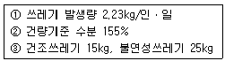
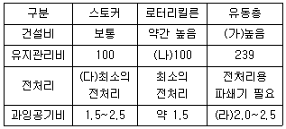
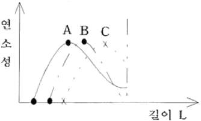
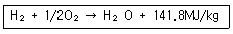
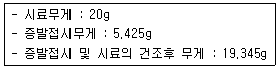
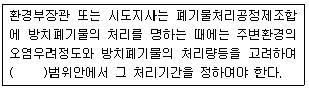
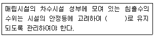
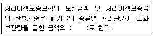

폐기물처리기사 (2005-09-04 기출문제)
1과목: 폐기물 개론
1. 인구 50만명인 도시의 쓰레기 발생량이 년간 165,000톤 일 경우 MHT는? (단, 수거인부는 150명, 1일 작업시간 8시간, 년간 휴가일수는 90일로 한다.)
- 1.5
- 2
- 2.5
- 3
(정답률: 알수없음)

2. 생활폐기물의 특성에 대한 설명으로 옳지 않은 것은?
- 배출량은 생활수준, 생활양식, 수집형태 등에 따라 좌우된다.
- 생활폐기물의 처리에 있어서 그 성상은 크게 문제되지 않는다.
- 폐기물의 질은 지역, 계절, 기후등에 따라 달라진다.
- 계절적으로는 연말이나 여름철에 많은 양의 쓰레기가 배출된다.
(정답률: 알수없음)
3. 건식분별방식에 대한 설명으로 옳지 않은 것은?
- 체에 의한 분별은 조성에 따른 입경의 차가 클수록 효과가 크다.
- Trommel에 의한 분별은 원통의 체를 수평으로부터 5도 전후로 경사된 축을 중심으로 회전시켜 체분리 하는 것이다.
- 와전류 분리는 비자성이고 전기전도도가 좋은 물질을 와전류현상에 의하여 분리하는 방식이다.
- 광학적분별은 물질의 광학적 특성을 이용한 것이로 고압공기분사부, 제1호퍼-제3호퍼, 배출구로 되어 있다.
(정답률: 알수없음)
4. 쓰레기의 수거노선을 설정할 때 유의할 사항으로 옳지 않은 것은?
- 가능한 한 간선도로 부근에서 시작하고 끝나도록 한다.
- 가능한 한 U자형 경로를 기본으로 설정한다.
- 가능한 한 한번 간 길은 다시 가지 않는다.
- 가능한 한 시계방향으로 수거노선을 정한다.
(정답률: 알수없음)
5. 폐기물의 선별 및 재료 회수공정의 기본적인 순서로서 가장 적절한 것은?
- 폐기물-분쇄-저장-공기선별-자석선별-싸이크론
- 폐기물-저장-분쇄-공기선별-싸이크론-자석선별
- 폐기물-저장-분쇄-자석선별-공기선별-싸이크론
- 폐기물-분쇄-저장-공기선별-싸이크론-자석선별
(정답률: 알수없음)
6. 다음 조건일 때 쓰레기의 습량기준 수분의 백분율은?

- 61%
- 63%
- 53%
- 51%
(정답률: 알수없음)
7. 강열감량(열작감량)의 정의에 대한 설명 중 가장 거리가 먼 것은?
- 강열감량이 높을수록 연소효율이 좋다.
- 소각잔사의 매립처분에 있어서 중요한 의미가 있다.
- 3성분중에서 가연분이 타지 않고 남은 양으로 표현된다.
- 소각로의 연소효율을 판정하는 지표 및 설계인자로 사용된다.
(정답률: 알수없음)
8. 우리나라 생활쓰레기에 대한 설명으로 가장 거리가 먼 것은?
- 생활쓰레기에 대한 계측방법은 용적톤수 산정법에서 중량톤수 산정법으로 바뀌었다.
- 가연성 폐기물의 량이 증가하고 있다.
- 생활쓰레기 발생량은 일본, 영국, 독일에 비하여 많은 편이다.
- 고위 발열량이 저하되고 있는 추세이다.
(정답률: 알수없음)
9. 쓰레기의 발생량과 성상에 영향을 주는 요소에 대한 설명으로 가장 거리가 먼 것은?
- 대체로 생활수준이 높아지면 쓰레기 발생량도 증가한다.
- 일반적으로 수집빈도가 낮고 쓰레기통이 클수록 쓰레기 발생량은 증가한다.
- 가정의 부엌에서 음식쓰레기를 분쇄하는 시설이 있으면 음식쓰레기 발생량이 감소한다.
- 재활용품의 회수 및 재이용률이 증가할수록 쓰레기 발생량은 감소한다.
(정답률: 알수없음)
10. 침출수의 처리에 대한 설명으로 옳지 않은 것은?
- BOD/COD＞0.5인 초기 매립지에선 생물학적 처리가 효과적이다.
- BOD/COD＜0.1인 오래된 매립지에선 물리화학적 처리가 효과적이다.
- 매립지의 매립대상물질이 가연성쓰레기가 주종인 경우 물리화학적 처리가 주체가 된다.
- 매립초기에는 생물학적처리가 주체가 되지만 유기물질의 안정화가 이루어지는 매립후기에는 물리화학적 처리가 주체가 된다.
(정답률: 알수없음)
11. 관거(Pipecline)를 이용한 폐기물의 수거방식에 대한 설명으로 옳지 않은 것은?
- 장거리 수송이 곤란하다.
- 전처리 공정이 필요 없다.
- 가설후에 경로변경이 곤란하고 설치비가 비싸다.
- 쓰레기 발생밀도가 높은 곳에서 사용이 가능하다.
(정답률: 알수없음)
12. 슬러지의 건조상(乾燥床)의 설계를 위한 고려사항으로 가장 거리가 먼 것은?
- 일기(日氣)
- 슬러지 성상
- 탈수보조제
- 토질의 증발력
(정답률: 알수없음)
13. 인구 32,000명의 어느 도시에서 쓰레기를 3일마다 수거하는데 적재용량 8m3인 트럭 20대가 동원된다. 1인당 1일 쓰레기 배출량이 0.82kg/인ㆍ일 일 때 쓰레기의 평균밀도는?
- 467kg/m3
- 486kg/m3
- 492kg/m3
- 504kg/m3
(정답률: 알수없음)
14. 돌, 코르크등의 불투명한 것과 유리같은 투명한 것의 분리에 이용되는 선별방법은?
- floatation
- optical sorting
- inertial separation
- electrostatic separator
(정답률: 알수없음)
15. 적환장의 방식 중 저장투하방식에 대한 설명으로 옳지 않은 것은?
- 쓰레기를 저장 피트(pit)나 플랫폼에 저장한 후 불도저등의 보조장치를 사용하여 수송차량에 싣는다.
- 일반적으로 저장 피트는 2~2.5m 깊이로 되어 있으며 저장량은 계획 처리량의 0.5~2일분의 쓰레기를 저장한다.
- 수집차량의 대기시간을 단축시킬수 있는 장점이 있다.
- 부패성 쓰레기는 직접 투입되고 재활용품이 많은 쓰레기는 별도 투하되어 재활용품을 선별한 뒤 수송차량에 적재하여 매립지로 수송하게 된다.
(정답률: 알수없음)
16. 폐기물관리에 있어서 비용면에서 가장 많은 비중을 차지하는 것은?
- 보관
- 수거
- 자원화
- 운반장비
(정답률: 알수없음)
17. 폐기물 압춖에 대한 설명으로 옳지 않은 것은?
- 캔류나 병류는 약 2.4atm 정도에서 압축되므로 저압압축기를 사용할 수 있다.
- 고압 압축기는 1000kg/m3까지 압축시킬 수 있으나 경제적 압축밀도는 700~800kg/m3정도이다.
- 고정식 압축기는 주로 수압에 의해 압축시킨다.
- 수직식 또는 소용돌이식 압축기는 압축피스톤을 유압 또는 공기에 의해 작동시키거나 기계적으로 작동시킨다.
(정답률: 알수없음)
18. 압력 메카니즘에 의한 파쇄에 대한 설명으로 옳지 않은 것은?
- 금속, 프라스틱, 목재 등 다양한 폐기물에 적합하다.
- 구조상 큰 덩어리의 폐기물 파쇄에 적합하다.
- 기구적으로 가장 간단하고 튼튼하다고 할 수 있다.
- 파쇄부의 마모가 적고 운전비용이 적게 소요된다.
(정답률: 알수없음)
19. 폐기물의 효율적인 수거노선의 영향인자로서 가장 거리가 먼 것은?
- 폐기물의 양
- 수거시간
- 폐기물의 성분
- 수거차의 대수
(정답률: 알수없음)
20. 쓰레기를 압축시켜 용적감소율이 30%인 경우 압축비는?
- 1.43
- 1.52
- 1.61
- 1.70
(정답률: 알수없음)
2과목: 폐기물 처리 기술
21. 어느 도시에 사용할 매립지의 총용량은 6,132,000m3이며 그 도시의 쓰레기 배출량은 2kg/인ㆍ일 이다. 매립지의 총 압축률이 30%일 경우 이 매립지의 사용년수는? (단, 수거대상인구 400,000명, 쓰레기밀도 500kg/m3으로함)
- 8
- 12
- 15
- 18
(정답률: 알수없음)
22. 퇴비화를 하기 위한 유기성폐기물의 [탄소/질소비]에 대한 설명으로 옳지 않은 것은?
- 탄소는 미생물들이 생장하기 위한 에너지원이다.
- 질소는 생장에 필요한 단백질합성에 주로 쓰인다.
- 탄소/질소비가 20보다 낮으면 질소가 암모니아로 변하여 pH를 증가시킨다.
- 도시하수슬러지는 탄소/질소비가 높이 질소부족현상을 유발한다.
(정답률: 알수없음)
23. 시멘트 고형화법 중 자가시멘트법에 대한 설명으로 옳은 것은?
- 고호제로 포틀랜드 시멘트를 이용한다.
- 시멘트의 수화반응시 많은 양의 물을 필요로한다.
- 콘크리트와 같은 고형물을 얻기 위하여 석회와 함께 미세한 포졸란물질을 폐기물과 섞는 방법이다.
- 연소가스 탈황시 발생된 슬러지처리에 많이 사용된다.
(정답률: 알수없음)
24. 습식고온고압산화처리(Wet Air Oxidation)에 대한 설명으로 옳지 않은 것은?
- 질소 제거율이 높다.
- 보통 70기압, 210℃로 가동한다.
- 처리된 Sludge는 탈수성이 좋다.
- 시설의 수명이 짧고 투자, 유지비가 높다.
(정답률: 알수없음)
25. 함수율이 98%인 슬러지와 함수율이 40%인 톱밥을 1:2로 혼합하여 복합비료로 만들고자 한다. 이 때 함수율은?
- 약 40%
- 약 50%
- 약 60%
- 약 70%
(정답률: 알수없음)
26. 매립지에서의 유기물 분해과정을 가장 옳게 나타낸 것은?
- 혐기성분해-호기성-산화물질형성-메탄발생
- 호기성분해-유기산형성-혐기성분해-메탄발생
- 호기성분해-혐기성-산성물질형성-메탄발생
- 혐기성분해-호기성-메탄생성-유기산형성
(정답률: 알수없음)
27. LFG Gas의 회수 후 재활용을 위한 일반적인 요구사항으로 가장 거리가 먼 것은?
- 폐기물 1kg당 1.5m3 이상의 기체가 생성될 것
- 기체의 발열량이 2200kcal/Nm3 이상일 것
- 발생기체의 50% 이상을 포집할 수 있을 것
- 폐기물 중에는 약 50%의 분해가능한 물질이 있을 것
(정답률: 알수없음)
28. BOD가 1500mg/ℓ, Cl-이 800ppm인 분뇨를 희석하여 활성오니법으로 처리한 결과 BOD가 30mg/ℓ, Cl-이 40ppm이었다면 처리효율은? (단, 희석수 중에 BOD, Cl-은 없음)
- 90%
- 92%
- 94%
- 96%
(정답률: 알수없음)
29. 호기성퇴비화 공정 설계인자에 대한 설명으로 옳지 않은 것은?
- 퇴비화에 적당한 수분함량은 50~60%로 40%이하가 되면 분해율이 감소한다.
- 온도는 55~60℃로 유지시켜야하며 70℃가 넘어서면 공기공급량을 증가시켜 온도를 적정하게 조절한다.
- C/N비가 20이하면 질소가 암모니아로 변하여 pH를 증가시켜 악취를 유발시킨다.
- 산소요구량은 체적당 20~30%의 산소를 공급하는 것이 좋다.
(정답률: 알수없음)
30. 혐기성소화처리방식의 특징에 해당하지 않는 것은?
- 일반적으로 혐기성 분해를 하려면 유기물 농도가 높을수록 유리하다.
- 최종분해 생설물자로서 메탄, 황화수소등 악취성분을 초함 한 가스체가 발생한다.
- 발생가스중에는 유용한 메탄이 60~70% 함유되어 있으며 열량이 약 3,000kcal/m3인 낮은 열원으로 이용된다.
- 소화슬러지의 발생량은 호기성분해의 슬러지 발생량보다 적고 또한 2차처리의 잉여슬러지보다 탈수하기 쉽다.
(정답률: 알수없음)
31. 쓰레기 발생량이 2kg/capita/day인 지역을 용적이 2m3인 손수레를 이용하여 이틀간격으로 전량 수거하려면 한 철소원이 담당해야 하는 최대 가옥수는 얼마인가? (단, 쓰레기의 밀도는 500kg/m3이고, 1가옥당 1.5세대, 1세대당 5인이 거주한다고 한다.)
- 약 12
- 약 16
- 약 25
- 약 33
(정답률: 알수없음)
32. 슬러지의 화학적 안정화 및 살균방법으로 가장 거리가 먼 것은?
- 석회 주입법
- 염소 주입법
- 회분 첨가법
- 방사선 조사법
(정답률: 알수없음)
33. 분뇨처리에 있어서 혐기성 분해의 특징에 대한 설명으로 옳지 않은 것은?
- 혐기성 분해를 하려면 유기물 농도가 1% 이하인 경우에 유리하다.
- 황화수소, 암모니아 등 악취성분을 포함한 가스가 발생한다.
- 소화슬러지의 발생량은 호기성분해의 슬러지보다 적다.
- 대용량 소화조는 계속적인 가온을 필요로 한다.
(정답률: 알수없음)
34. 폐기물 매립지에서 사용되고 있는 복토재 재료의 종류에는 천연복토재와 인공복토재로 구분할 수 있다. 이 중 인공복토재의 특징이 아닌 것은?
- 투수계수가 높아야 한다.
- 악취발생량을 저감 시킬 수 있어야 한다.
- 독성이 없어야 한다.
- 가격이 저렴해야 한다.
(정답률: 알수없음)
35. 폐기물 매립시설의 유지관리 측면에서 매립장비의 선정 및 배치는 매우 중요하다. 매립지 내 매립장비를 배치할 때의 주요 고려사항으로 가장 거리가 먼 것은?
- 시간당 최대 매립량
- 일 쓰레기 매립가스량
- 매립지의 규모
- 일 작업가능시간
(정답률: 알수없음)
36. 유기성 고형화기술에 대한 설명으로 옳지 않은 것은?
- 수밀성이 매우 크며 다양한 폐기물에 적용할 수 있다.
- 미생물, 자외선에 의한 안정성이 약하다.
- 방사성폐기물을 제외한 기타 폐기물에 대한 적용사례가 제한되어 있다.
- 폐기물의 특정성분에 의한 중합체 구조가 장기적으로 강화되는 장점이 있다.
(정답률: 알수없음)
37. 진공여과기로 슬러지를 탈수하여 cake의 함수율을 70%로 할 때 여과속도는 20kg/m2.h(고형물기준), 여과면적은 50m2의 조건에서 1시간당의 cake 발생량은? (단, 비중은 1.0으로 가정한다.)
- 1.33ton/h
- 2.33ton/h
- 3.33ton/h
- 4.33ton/h
(정답률: 알수없음)
38. 내륙매립공법 중 도량형 공법의 특성에 대한 설명으로 가장 거리가 먼 것은?
- 폭 20cm 및 깊이 10m 정도의 도량을 판 후 매립한다.
- 파낸 흙을 복토재로 이용가능한 경우 경제적이다.
- 사전 정비작업이 그다지 필요하지 않으나 단층매립으로 용량의 낭비가 크다.
- 사전 작업시 침출수 수집장치나 차수막 설치가 용이하다.
(정답률: 알수없음)
39. 유해폐기물 처리방법 중 용매추출법에 대한 설명으로 옳지 않은 것은?
- 액상 폐기물에서 제거하고자 하는 성분을 용매쪽으로 흡수시키는 방법이다.
- 용매추출에 사용되는 용매는 비극성이어야 하며 증류 등에 의한 방법으로 용매회수가 가능하여야 한다.
- 낮은 휘발성이로 인해 탈기시키기가 곤란한 물질을 처리하기에 적합하다.
- 용매는 분배계수가 낮고 끓는점이 높이며 밀도는 물과 달라야 한다.
(정답률: 알수없음)
40. 해안 매립공법 중 순차투입방법에 대한 설명으로 옳지 않은 것은?
- 수심이 깊은 처분장에서 건설비 과다로 내수를 완전히 배제하기가 곤란한 경우가 많아 이 방법을 택하는 경우가 많다.
- 부유성 쓰레기의 수면확산에 의해 수면부와 육지부 경계구분이 어려워 매립장비가 매몰되기도 한다.
- 쓰레기 지반안정화 및 매립부지 조기 이용등에 유리하지만 매립효율이 떨어진다.
- 호안측으로부터 점차적으로 쓰레기를 투입하여 육지화하는 방법이다.
(정답률: 알수없음)
3과목: 폐기물 소각 및 열회수
41. 다음은 쓰레기 소각로를 형식별로 비교한 표이다. 옳지 않은 것은?

- (가)
- (나)
- (다)
- (라)
(정답률: 알수없음)
42. 유동층 소각로(Fluidized Bed Incinerator)의 특성에 대한 설명으로 옳지 않은 것은?
- 미 연소분 배출이 많아 2차 연소실이 필요하다.
- 반응시간이 빨라 소각시간이 짧다.
- 기계적 구동부분이 상대적으로 적어 유지관리가 용이하다.
- 소량의 과잉공기량으로도 연소가 가능하다.
(정답률: 알수없음)
43. 플라스틱 소각에 대한 설명으로 가장 거리가 먼 것은?
- 플라스틱의 소각시에는 보통 도시폐기물이 연소할 때 필요한 공기량의 약 10배가 필요하다.
- 플라스틱의 발열량은 보통 도시폐기물의 발열량보다 약 6~7배 높다.
- 질소를 함유한 플라스틱에서는 불완전연소에 의하여 HCN이 발생한다.
- PVC가 연소할 때 부식가스인 H2S, SO2등의 황산화물이 발생되어 공기예열기, 집진장치등을 손상시킨다.
(정답률: 알수없음)
44. 메탄의 고위발열량이 9500kcal/Nm3이면, 저위발열량은 몇 kcal/Nm3인가? (단, 물의 기화열은 597kcal/kg이다._
- 6520
- 7580
- 8540
- 9160
(정답률: 알수없음)
45. 슬러지나 고형폐유 저질탄 등 소각이 어려운 난연성 폐기물 소각에 적합한 소각로 형태로 가장 알맞은 것은?
- 스토커형 소각로
- 유동층 소각로
- 원통상형 소각로
- 로터리 킬른형 소각로
(정답률: 알수없음)
46. 그림은 폐기물 A, B, C의 소각로 길이에 의한 연소성을 나타낸 것이다. 옳지 않은 설명은?

- 폐기물 A는 B보다 함수율이 작을수가 있다.
- 폐기물 A는 B보다 건조시간이 길다.
- 폐기물 C연소를 위해 소각로의 길이는 더 길어야 한다.
- 열작감량이 C, A, B 순서로 높을수도 있다.
(정답률: 알수없음)
47. 보통 잡쓰레기(수분 40%이하, 고지(古紙), 톱밥 등)와 고분자계 쓰레기의 혼합소각에 대한 설명으로 옳지 않은 것은?
- 잡쓰레기는 화격자 상향연소방식으로 소각하면 연소속도가 빠르고 효율도 높다.
- 잡쓰레기는 폐플라스틱이 20% 정도 혼합되면 연소실열부하가 과대해지고 고온이 되어 화격자의 재구성이 떨어진다.
- 혼합된 플라스틱은 열을 받아 용융하여 화격자 아래로 적하하고 로바닥에서 연소하기 때문에 화격자와 내화벽돌의 재질은 내열성이 높아야 한다.
- 플라스틱이 혼합되었을 때 흑연(검댕)을 방지하려면 혼합 잡쓰레기로 수분을 최대한 건조시켜 플라스틱의 열분해율을 높여야 한다.
(정답률: 알수없음)
48. 아래 반응은 수소의 연소반응식이다. 여기서 141.8MJ/kg 가장 적절하게 표현한 것은?

- 수소의 흡수열이다.
- 수소의 고위발열량이다.
- 수소의 저위발열량이다.
- 수소의 비열이다.
(정답률: 알수없음)
49. 함수율이 95%인 슬러지를 함수율 60%의 탈수 Cake로 하였을 때 체적비 변화율은? (단, 분리액으로 유출된 슬러지량은 무시하며 탈수전후의 비중은 1로 동일하다.)
- 1/8
- 1/6
- 1/5
- 1/4
(정답률: 알수없음)
50. 도시폐기물의 연소시 NOx의 생성에 미치는 영향요소로서 가장 거리가 먼 것은?
- 연소 압력
- 연소 온도
- 연소실 체류시간
- 폐기물의 성분 및 혼합정도
(정답률: 알수없음)
51. 폐기물 처리 시 에너지 회수방법이 될 수 없는 것은?
- 열분해
- 고화처리
- 혐기성소화
- RDF
(정답률: 알수없음)
52. 플라스틱 소각의 문제점에 대한 설명으로 가장 거리가 먼 것은?
- 플라스틱은 용융점이 낮아 건조단계에서 통기공을 막거나 밑으로 적하하여 화격자나 고동장치등의 고장을 일으킨다.
- 염소를 함유한 플라스틱은 유해중금속이 첨가된 경우가 많기 때문에 유해물질의 비산도 문제가 되고 질소를 함유한 플라스틱에서는 불완전연소에 의해 IICN도 발생된다.
- 플라스틱 함유량이 높은 폐기물을 소각할 때는 공기공급이 과다하게 되어 불완전연소를 피할수 없다.
- 도시쓰레기에 함유된 플라스틱의 발열량은 대개 500~11000kcal/kg 정도로 보통 도시폐기물에 비하여 약 6~8배 정도 높아 고온부식을 일으킨다.
(정답률: 알수없음)
53. 밀도가 600kg/m3인 도시쓰레기 100ton을 소각시킨 결과 밀도가 1200kg/m3인 재 10ton이 남았다. 이 경우 부피감소율과 무게감소율 중 큰 것은?
- 부피 감소율
- 무게 감소율
- 부피 감소율과 무게 감소율이 동일하다.
- 주어진 조건만으로는 모른다.
(정답률: 알수없음)
54. 화격자 연소부하에 대한 설명으로 옳지 않은 것은?
- 화격자 연소부하가 너무 크면 로내 온도저하로 불완전연소가 일어난다.
- 회분의 함량이 적은 폐기물은 화격자 연소부하를 증가시킨다.
- 단위면적당 폐기물의 연소속도를 의미한다.
- 유동상 소각로는 노상의 투영면적을 사용한다.
(정답률: 알수없음)
55. 연소속도에 관한 다음 설명 중 옳은 것은?
- 고온 저압일수록 연소속도는 증가한다.
- 저온 고압일수록 연소속도는 증가한다.
- 연소속도는 온도에만 영향을 받는다.
- 연소속도는 온도, 압력에 무관하다.
(정답률: 알수없음)
56. 유황함량이 4%인 벙커C유 1ton을 연소시킬 경우 발생되는 SO2의 양은? (단, 황성분 전량이 SO2로 전환됨)
- 30kg
- 60kg
- 80kg
- 98kg
(정답률: 알수없음)
57. 연소속도에 미치는 요인으로 가장 거리가 먼 것은?
- 산소의 농도
- 촉매
- 반응계의 온도
- 연료의 발열량
(정답률: 알수없음)
58. 소각시 유해가스 처리방법 중 건식, 습식, 반건식의 장단점에 대한 설명으로 옳지 않은 것은?
- 유해가스 제거효율 : 건식법은 비교적 낮으나 습식법은 매우 높다.
- 백연대책 : 건식법과 반건식법은 대책이 불필요하나 습식법은 배기가스 냉각 등 백연대책이 필요하다.
- 운전비 및 건설비 : 건식법은 낮으나 습식법은 높은편이다.
- 운전 및 유지관리 : 건식법은 재처리, 부식방지 등 관리가 어려우나 습식법은 폐수로 처리되어 용이하다.
(정답률: 알수없음)
59. 촉매를 사용하여 저온에서 유기성 가스를 완전 산화분해하여 무해, 무취화 할 때의 장점이 아닌 것은?
- 불연성 무기 악취물질의 처리가 용이하다.
- 일반 연소법으로 처리가 어려운 저농도 경우에도 효과를 얻을 수 있다.
- 운전비용이 저렴하다.
- 자동제어가 가능하며 질소산화물의 생성이 거의 없다.
(정답률: 알수없음)
60. 무게비가 탄소 85w%, 수소 13w%, 황 2w%의 조성인 중유의 필요한 이론 공기량은?
- 약 8.3Sm3/kg
- 약 9.8Sm3/kg
- 약 10.2Sm3/kg
- 약 11.1Sm3/kg
(정답률: 알수없음)
4과목: 폐기물 공정시험기준(방법)
61. 어떤 폐기물의 수분을 측정하기 위해 실험하였더니 다음과 같은 결과를 얻었다. 수분은 몇 %인가?

- 23.9%
- 30.4%
- 41.9%
- 78.3%
(정답률: 알수없음)
62. 시약 및 용액제조방법으로 옳지 않는 것은?
- 염산용액(0.2N) : 1N 염산용액을 물로 5배 희석한다.
- 아질산나트륨(5W/V%) 용액 : 아질산나트륨 5g을 물 100mℓ에 녹인 후 정치시켜 사용한다.
- 황산용액(1N) : 황산 30mℓ(95%이상)를 1000mℓ중에 저어 섞으면서 천천히 넣어 식힌다.
- 크로마트그래피용 실리카겔 : 크로마토그래피용 노말헥산으로 씻은 다음 여과하여 비이커에 넣고 층의 두께를 10mm이하로 하여 130℃에서 18시간 건조한 다음 데시게이터안에서 30분 방냉한다.
(정답률: 알수없음)
63. 성상에 따른 시료의 채취방법에 대한 설명으로 옳지 않은 것은?
- 콘크리트 고형화물이 소형일때는 적당한 채취도구를 사용하여 한번에 일정량씩을 채취하여야 한다.
- 콘크리트 고형화물이 대형일때는 성상을 대표할 수 있는 임의의 장소에서 일정량을 채취한다.
- 액상혼합물의 용기에 들어 있을때는 잘 혼합하여 균일한 상태로 하여 채취한다.
- 액상혼합물의 경우는 원칙적으로 최종지점의 낙하구에서 흐르는 도중에 채취한다.
(정답률: 알수없음)
64. 폐기물 공정시험방법에서 pH 표준액에 대한 설명으로 옳지 않는 것은?
- 표준액의 조제에 사용되는 물은 정제수를 증류하여 그 유출액을 15분 이상 끓여 이산화탄소를 날려보내고 생석회 흡수관을 달아 식힌 후 사용한다.
- 경질유리병 또는 폴리에틸렌병에 보관하여 사용한다.
- 산성표준액은 묽은 황산 흡수관을 부착하여 2개월 이내에 사용한다.
- 염기성표준액은 생성회 흡수관을 부착하여 1개월 이내에 사용한다.
(정답률: 알수없음)
65. 원자흡광분석에서 일어나는 불꽃중에서 원자가 이온화 하는 화학적 간섭을 방지할 수 있는 방법은?
- 이온교환이나 용매추출등에 의한 방해물질의 제거
- 이온화 전압이 낮은 원소를 첨가하여 방해물질의 제거
- 과량의 간섭원소의 첨가
- 목적원소의 용매추출
(정답률: 알수없음)
66. 시료 전처리 방법에 대한 설명으로 옳지 않은 것은?
- 다량의 점토질을 함유한 시료는 질산-과염소산-불화수소산에 의한 전처리가 적용된다.
- 유기물 함량이 비교적 높지 않고 금속의 수산화물, 산화물, 인산염 및 황화물을 함유하고 있는 시료는 질산-염산에 의한 전처리가 적용된다.
- 회화에 의한 유기물 분해법은 400℃이상에서 쉽게 휘산되는 유기물에 적용된다.
- 마이크로파에 의한 유기물분해는 가열속도가 빠르고 재현성이 좋으며 폐유 등 유기물이 다량 함유된 시료의 전처리에 적용된다.
(정답률: 알수없음)
67. 다음의 점토질 EH는 규산염을 함유한 시료에 적용되는 시료의 전처리 방법으로 가장 옳은 것은?
- 질산-과염소산-불화수소산에 의한 유기물 분해
- 질산-염산에 의한 유기물 분해
- 질산-과염소산에 의한 유기물 분해
- 질산-황산에 의한 유기물 분해
(정답률: 알수없음)
68. 다음에 표시된 농도 중 가장 낮은 것은?
- 0.0⑤ppm
- 0.⑤g/m3
- 0.⑤mg/ℓ
- 0.5μg/ℓ
(정답률: 알수없음)
69. 노말헥산추출시험방법으로 다음 유분을 정량할 수 있는 물질로서 가장 적절한 것은?
- 탄화수소유도체, 그리이스 유상물질
- 방향족탄화수소, 메탄올, 등유
- 디메틸에테르, 유지방(乳脂肪), 유기인산염
- 에탄올, 방향족염소화합물, 지방산
(정답률: 알수없음)
70. 노말헥산 추출시험방법에 의한 유부함량측정시 증발용기는 실리카겔 데시게이터에 넣고 정확히 얼마동안 방냉한 후 무게를 다는가?
- 30분
- 1시간
- 3시간
- 5시간
(정답률: 알수없음)
71. 흡광광도법을 적용한 구리분석에 대한 설명으로 옳지 않은 것은?
- 시료중에 시안화화물이 함유되어 있으면 착화합물을 형성하기 때문에 염산산성으로 한 후 끓여서 시안화물을 완전히 분해 제거하여야 한다.
- 비스머스(Bi)가 구리의 양보다 3배이상 존재할 경우에는 청색을 나타내어 방해한다.
- 추출용매는 초산부틸 대신 사염화탄소, 클로로포름, 벤젠등을 사용할 수도 있다.
- 무수황산나트륨 대신 건조여과지를 사용하여 여과해도 된다.
(정답률: 알수없음)
72. 크롬표준원액(0.1mg cr/mℓ) 1000mℓ를 만들기 위하여 필요한 중크롬산 칼륨의 양은? (단, K:39, Cr:52)
- 0.141g
- 0.283g
- 0.324g
- 0.465g
(정답률: 알수없음)
73. 가스크로마토그래피법의 정량분석에 대한 설명으로 옳지 않은 것은?
- 곡선 면적 또는 피이크 높이를 측정하여 분석한다.
- 얻어진 정량치는 중량%, 부피%, 물%, ppm등으로 표시한다.
- 검출한계는 각 분석방법에서 규정하고 있는 잡음 신후(Noise)의 1/2배의 신호로 한다.
- 동일시료를 재현성 시험시 평균치 차이가 허용차를 초과해서는 안된다.
(정답률: 알수없음)
74. 가스크로마토크래피법에서 유기물질을 정량할 때 기록계에 나타나는 여러개의 피크가 각각 어떤 물질의 것인가를 어떻게 알아낼 수 있는가?
- 표준물질의 피크높이와 비교해서
- 표준물질의 피크폭을 비교해서
- 전자포획형검출기를 사용해서
- 표준물질의 머무는 시간과 비교해서
(정답률: 알수없음)
75. 트리클로로에틸렌이 함유된 고상폐기물의 용출시험 과정에 대한 설명으로 옳지 않은 것은? [단, 가스크로마토그래피법(용매추출법)]
- 가스타이트(Gas tight)유리제 주사기를 사용한다.
- 시료와 용매의 혼합비율은 1:10(W/V)으로 한다.
- 용매의 pH는 508~6.3으로 한다.
- 진탕기를 사용하여 6시간 연속 진탕한다.
(정답률: 알수없음)
76. 다음 중 공기 또는 다른 가스가 침입하지 않도록 내용물을 보호하는 용기는?
- 밀폐용기
- 기밀용기
- 밀봉용기
- 차광용기
(정답률: 알수없음)
77. 가스크로마토그래피의 장치구성의 순서로 옳은 것은?
- 운반가스-유량계-시료도입부-분리관-검출기-기록부
- 운반가스-시료도입부-유량계-분리관-검출기-기록부
- 운반가스-유량계-시료도입부-광원부-검출기-기록부
- 운반가스-시료도입부-유량계-광원부-검출기-기록부
(정답률: 알수없음)
78. 유도결합플라스마발광광도법에 대한 설명으로 옳지 않은 것은?
- 바닥상태의 원자가 이 원자 증기층을 투과하는 특유파장의 빛을 흡수하는 현상을 이용한다.
- 알곤가스를 플라스마 가스로 사용하여 수정발진식 고주파 발생기로부터 발생된 주파수 영역에서 유도코일에 의하여 플라즈마를 발생시킨다.
- 알곤플라스마를 점등시키려면 테슬라코일에 방전하여 알곤가스의 일부가 전리되도록 한다.
- 유도결합플라스마의 중심부는 저온, 저전자 밀도가 형성되며 화학적으로 불활성이다.
(정답률: 알수없음)
79. 폐기물공정시험법상 주요단위 및 기호는 KS A 01⑤의 규정에 따른다. 이 KS A 01⑤의 규정은 어느 단위를 말하는가?
- CGS 단위
- ft-lb 단위
- Sl 단위
- FLT 단위
(정답률: 알수없음)
80. 흡광광도분석법에서 시료액과 흡수차장이 약 370nm 이하일 때 어떤 흡수셀을 일반적으로 사용하는가?
- 20mm 셀
- 석영흡수셀
- 경질유리흡수셀
- 플라스틱셀
(정답률: 알수없음)
5과목: 폐기물 관계 법규
81. 매립시설의 기술관리인 자격기준으로 알맞지 않은 것은?
- 화공기사
- 전기기사
- 건설기계기사
- 일반기계기사
(정답률: 알수없음)
82. 다음 중 소각시설의 검사기관이 아닌 것은?
- 환경관리공단
- 국립환경기술원
- 산업기술시험원
- 한국기계연구원
(정답률: 알수없음)
83. 폐기물의 재활용을 위한 폐기물 에너지 회수기준으로 틀린 것은?
- 다른 물질과 혼합하지 아니하고 당해 폐기물의 저위발열량이 킬로그램당 3천7백킬로칼로리 이상일 것
- 에너지 회수효율(회수에너지 총량을 투입에너지 총량으로 나눈 비율)이 75% 이상일 것
- 회수열을 전량 열원으로 스스로 이용하거나 다른 사람에게 공급할 것
- 환경부장관이 정하여 고시하는 경우에는 폐기물의 30% 이상을 원료 또는 재료로 재활용하고 그 나머지 중에서 에너지 회수에 이용할 것
(정답률: 알수없음)
84. 기술관리인의 자격, 기술관리대행계약등에 관한 필요한 사항을 정하는 것은?
- 시도지사령
- 유역환경청장령
- 환경부령
- 대통령령
(정답률: 알수없음)
85. 폐기물 중간처리시설기준에 관한 내용으로 알맞지 않은 것은?
- 소멸화시설 : 1일 처리능력이 100킬로그램이상인 시설
- 퇴비화시설 : 1일 처리능력이 100킬로그램이상인 시설
- 압축시설 : 동력이 20마력이상인 시설
- 파쇄시설 : 동력이 20마력이상인 시설
(정답률: 알수없음)
86. 폐기물 처리업의 업종구분과 영업내용으로 알맞지 않은 것은?
- 폐기물 수집, 운반업 : 폐기물을 수집하여 처리장소로 운반하는 영업
- 폐기물 중간처리업 : 폐기물중간처리시설을 갖추고 폐기물을 소각, 중화, 파쇄, 고형화등의 방법에 의하여 중간처리(생활폐기물을 재활용하는 경우를 제외한다)하는 영업
- 폐기물최종처리업 : 폐기물최종처리시설을 갖추고 폐기물을 매립 등(해역배출을 제외)의 방법에 의하여 최종처리하는 영업
- 폐기물종합처리업 : 폐기물을 수집, 운반, 중간처리, 최종처리를 종합적으로 함께 하는 영업
(정답률: 알수없음)
87. 다음 중 ()안에 알맞은 내용은?

- 1월
- 2월
- 3월
- 6월
(정답률: 알수없음)
88. 다음 지정폐기물의 처리기준 및 방법이 틀린 것은?
- 폐석면 : 고온용융처리하거나 고형화처리하여야 한다.
- 폐페인트 및 페락카 :고온소각 또는 고온용융처리하여야 한다.
- 폐농약 : 액상의 것은 고온소각 또는 고온용융처리하여야 한다.
- 폴리클로리네이티드비페닐 함유폐기물 : 고온소각 또는 고온용융처리하여야 한다.
(정답률: 알수없음)
89. 폐기물매립시설의 사후관리기준 및 방법 중 침출수 관리방법에 관한 내용이다. 아래 ()안에 알맞은 내용은?

- 0.5m 이하
- 1.0m 이하
- 1.5m 이하
- 2.0m 이하
(정답률: 알수없음)
90. 관계공무원이 사무소 또는 사업장등에 출입하여 관계서류, 시설, 장비등을 조사하는 것을 거부, 방해 또는 기피한자에 대한 행정처분기준은?
- 100만원 이하의 과태료
- 200만원 이하의 과태료
- 300만원 이하의 과태료
- 500만원 이하의 과태료
(정답률: 알수없음)
91. 다음 중 ()안에 알맞은 내용은? (단, 폐기물처리업자, 허용보관량을 초과한 경우임)

- 1.5배
- 2.0배
- 2.5배
- 3.0배
(정답률: 알수없음)
92. 폐기물처리업자의 영업정지처분에 따라 당해 영업의 이용자등에게 시함 불편을 주는 경우 과징금을 부과할 수 있도록 하고 있다. 관련 내용 중 틀린 것은?
- 환경부령이 정하는 바에 따라 그 영업의 정지에 갈음하여 1억원 이하의 과징금을 부과할 수 있다.
- 사업장의 사업규모, 사업지역의 특수성, 위반행위의 정도 및 횟수 등을 참작하여 과징금의 금액의 2분의1 범위안에서 가중 또는 감경할 수 있다.
- 가중하는 경우에는 과징금의 총액이 1억원을 초과할 수 없다.
- 과징금을 납부하지 아니한 때에는 국세체납처분 또는 지방세체납처분의 예에 의하여 이를 징수한다.
(정답률: 알수없음)
93. 다음은 청정지역에서 관리형매립시설의 침출수 배출 허용기준을 나열한 것이다. 이 중 잘못된 것은?
- 색도-200이하
- 카드뮴 함유량 - 0.⑤mg/ℓ이하
- 시안함유량 - 0.2mg/ℓ이하
- 수은함유량 - 0.01mg/ℓ이하
(정답률: 알수없음)
94. 음식물류 폐기물을 스스로 감량하는 자에 대한 음식물류 폐기물처리기준으로 적절한 것은?
- 가열에 의한 건조에 의하여 부산물의 수분함량을 15% 미만으로 감량하여야 한다.
- 가열에 의한 건조에 의하여 부산물의 수분함량을 20% 미만으로 감량하여야 한다.
- 가열에 의한 건조에 의하여 부산물의 수분함량을 25% 미만으로 감량하여야 한다.
- 가열에 의한 건조에 의하여 부산물의 수분함량을 30% 미만으로 감량하여야 한다.
(정답률: 알수없음)
95. 사용관리항목 및 방법에 따라 조사한 결과를 토대로 매립시설이 주변환경에 미치는 영향에 대한 종합보고서를 매립시설의 사용종류 신호 후 몇 년마다 작성하여야 하는가?
- 2년 마다
- 3년 마다
- 5년 마다
- 10년 마다
(정답률: 알수없음)
96. 기술관리인을 두어야 하는 폐기물처리시설에 해당되지 않는 것은?
- 시간당 처리능력이 150킬로그램인 멸균분쇄시설
- 1일 처리능력이 8톤인 연료화 시설
- 1일 처리능력이 50톤인 절단 시설
- 시간당 처리능력이 220킬로그램인 감염성폐기물대상 소각시설
(정답률: 알수없음)
97. 다음 중 폐기물 처리시설의 사후관리 이행보증금을 면제 받을 수 있는 경우에 해당하는 것은?
- 사후관리의 이행을 보증하는 보험에 가입한 경우
- 사후관리비용의 전부에 상당하는 담보물을 제공하는 경우
- 국가 또는 지방자치단체가 폐기물매립시설의 설치인자인 경우
- 사후관리에 소요되는 비용을 사전적립한 경우
(정답률: 알수없음)
98. 폐기물재활용신고서에 첨부되어야 하는 서류와 가장 거리가 먼 것은?
- 재활용신고대상임을 증명하는 서류
- 재활용시설 또는 재활용 용기의 설치내역서
- 재활용과정에서 발생되는 폐기물의 처리계획서
- 재활용대상폐기물의 수집, 운반계획서
(정답률: 알수없음)
99. 폐기물처리기본계획에 포함되어야 할 사항과 가장 거리가 먼 것은?
- 폐기물의 관리여건 및 전망
- 폐기물의 종류별 발생량 및 장래의 발생예상량
- 폐기물의 수집, 운반, 보관 및 그 장비, 용기 등의 개선에 관한 사항
- 소요재원의 확보계획
(정답률: 알수없음)
100. 폐기물 소각처리시설의 검사항목 중 정기검사 항목이 아닌 것은?
- 보조 연소장치의 작동상태
- 연소실의 산소공급장치 작동상태
- 배기가스온도의 적정여부
- 소방장비 설치 및 관리실태
(정답률: 알수없음)
년간 쓰레기 발생량 = 165,000톤
수거인부 수 = 150명
1일 작업시간 = 8시간
년간 휴가일수 = 90일
년간 총 작업일수 = 365 - 90 = 275일
년간 총 작업시간 = 275일 x 8시간 = 2,200시간
MHT = 년간 쓰레기 발생량 / 년간 총 작업시간
MHT = 165,000톤 / 2,200시간
MHT = 75톤/시간
따라서, MHT는 2이다.